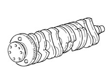

1024A CRANKSHAFT
- Path
- Descriptions > 10 ENGINE > 1024 CRANKSHAFT AND FLYWHEEL > 1024A CRANKSHAFT
- Kind
- system description
- Applies to
- engines: 1.9 JTD 8V, 1.9 JTD 16V, 2.4 JTD 20V; all production periods
- Interactive page
- https://sloeber94.github.io/elrnDB/#/939003439
Applies to: engines: 1.9 JTD 16V; all production periods
CONSTRUCTION SPECIFICATIONS
This is steel and rests on five main bearings. Shaft axial clearance is governed by two half-rings housed in the middle main bearing.
Eight counterweights balance the crankshaft rotary masses with precision.
A set of channels runs along the length of the crankshaft to lubricate the main journals and crankpins.
A phonic wheel (1) is fitted at the rear for the rpm sensor.

Applies to: engines: 1.9 JTD 8V; all production periods
CONSTRUCTION SPECIFICATIONS
This is cast iron and rests on five main bearings. Shaft axial clearance is governed by two half-rings housed in the rear main bearing.
Eight counterweights balance the crankshaft rotary masses with precision.
A set of channels runs along the length of the crankshaft to lubricate the main journals and crankpins.
A phonic wheel (1) is fitted at the rear for the rpm sensor.
Applies to: engines: 2.4 JTD 20V; all production periods
CRANKSHAFT
Specifications
Type
This is steel and rests on six main bearings. Shaft axial clearance is governed by two half-rings housed in the rear main bearing.
Ten counterweights balance the crankshaft rotary masses with precision.
A set of channels runs along the length of the crankshaft to lubricate the main journals and crankpins.
A phonic wheel is fitted at the rear for the rpm sensor.
